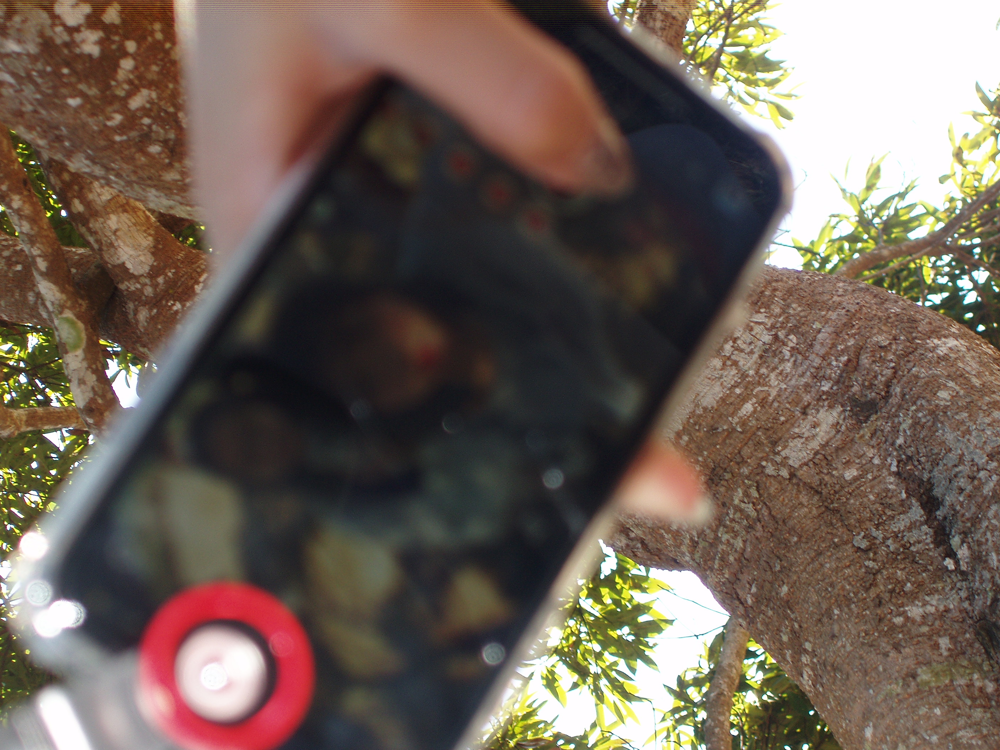

下課
這幾張照片是在下課時間拍攝的，記錄了我們班級同學之間的真實互動和美好瞬間，無論是輕鬆愉快的聊天、熱鬧的遊戲還是安靜的閱讀，都展示了大家在學校生活中的不同面貌。這些時刻既平凡又珍貴，讓人感受到青春的朝氣和友誼的溫暖。
暨大健走-高二
暨大健走是一項由學校組織的年度活動，旨在促進學生的體能鍛煉。這項活動通常在每年的春季舉行，選擇天氣宜人的日子，讓同學們在大自然中放鬆身心，享受戶外運動的樂趣。
在健走過程中，同學們可以一邊欣賞自然風光，一邊與朋友交流，增進彼此之間的友誼。老師們也會陪伴在旁，與學生們互動，營造輕鬆愉快的氛圍。整個活動中，大家時而快步行走，時而停下來拍照留念，充滿了青春的活力和笑聲。
暨大健走-高三
高中最後一次暨大健走
滑板社
透過這些照片，可以看到社員們在課堂上學習滑板技巧的過程，他們可能在平地練習基本的動作，或者在滑板場進行更高難度的訓練。每張照片都是一個故事，展示了社員們的決心、毅力和對滑板運動的熱愛。
此外，這些照片也可以用來宣傳滑板社，吸引更多的同學加入。通過展示社員們在課堂上的活動和學習氛圍，可以讓其他同學更加了解滑板社的特色和魅力，從而增加社團的知名度和吸引力。
最重要的是，這些照片可以成為社員們寶貴的回憶，讓他們在日後回顧時，能夠重新感受到當時的樂趣和成就感。因此，攝影職位不僅僅是一個工作，更是一種責任，要用心捕捉每個珍貴的瞬間，為社員們留下珍貴的回憶。